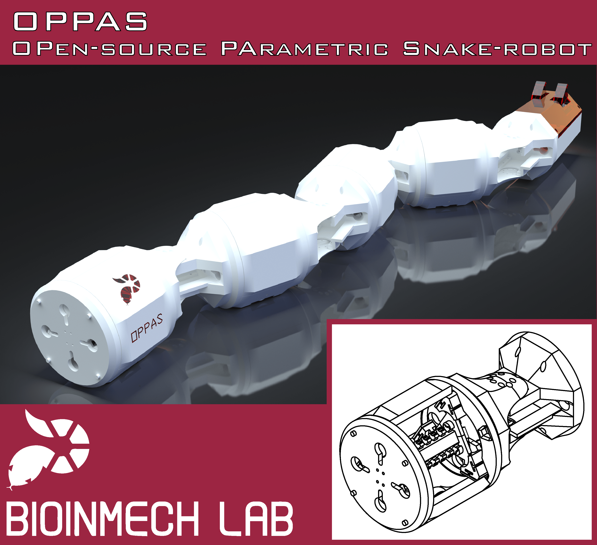

OPPAS
OPen PArametric Snake-robot

OPPAS is a snake robot intended for research with robots that mimic the structure of a snake. The main reason I started this project is because I wanted a fast way to produce a snake robot that was easy to build and deploy, but without the need of drastic changes if a component of the robot changes. The master branch of the repository is hosted in OPPAS repository, but OPPAS's project files can be downloaded at:
- https://grabcad.com/library/oppas-open-source-parametric-snake-robot-1
- https://gallery.autodesk.com/fusion360/projects/92839/oppas-open-source-parametric-snake-robot
In essence, a snake robot is very simple; it is a series of links connected by joints. However, the shape and size of the links and joints will change depending on the components you use. For example, a big battery may require a long but slender link. But, depending on the microcontroller you use, you may need a short but thick link. Although putting together a bunch of u-brackets and other rigid parts is easy, this leaves the electronics and other components exposed, while at the same time properly fixing the components to the robot may be difficult. By making the design parametric, different snake robots can be produced, according to your requirements.
Another property I was interested in was modularity. By modularity I mean that a module (link + joint) of the snake robot is composed of different elements that can be interchanged without needing to redesign other parts. For example, if your snake robot requires passive wheels (e.g., for achieving anisotropic friction) just design the 'belly' of the robot without altering the rest. Or, you may change the wheel's model and redesign the necessary part. You are using a bigger battery that doesn't fit the current robot? Just make a longer link without affecting the joints.
However, there are some sacrifices to be made to keep the design as general as possible. Since the design is parametric (and the number of parameters is limited) the design is not optimal. In other words, there may be a lot of wasted space inside the robot.
OPPAS is an attempt to make snake robots easier to build and to test your ideas. It is open-source; the robot was designed using Autodesk Fusion 360. The files can be downloaded and the whole project can be recreated in your computer. I consider this to be more useful than sharing .STL files that have to be downloaded and modified to fit your needs. As mentioned before, OPPAS is parametric. Read the documentation for information about the available parameters. Finally, I wanted a robot that could be afforded by anyone. The current version of OPPAS has been printed in ABS using a Zortrax M200. Although the Zortrax may not be affordable by everyone, I have printed also some parts in my own Overlord Pro, and although the tolerances are more difficult to overcome, it still works. Each module costs less than US$20 (using eSun ABS).
The library to control the servos DuoDMXL (Duo-Dynamixel) is being developed and documented in:
Current version
As of [2017-05-01]: OPPAS Mk. 1.0
Desired requirements for future versions
There are several weak points in the current design of OPPAS. In particular, I would like to improve the following points:
- Waterproof: Make the design waterproof.
- Support for more servos: Currently, OPPAS Mk. 1.0 is designed with the ROBOTIS MX-64 servos in mind. I would like to support more servo's models in the future, but parameterizing them is rather difficult (e.g., they have different shapes, the screw holes positions are in different arrangements).
- Smaller: Due to the MX-64 servo's size, OPPAS Mk 1.0 is big in comparison to other snake robots. If possible, I would like to make it a little smaller next time.
Sections
This documentation is divided into the following sections:
| Section | Description |
|---|---|
| Home | Introduction to OPPAS |
| Body of OPPAS | A detailed explanation of each part that composes OPPAS |
| Electronic Design | An overview of the electronic setup considered. The details are being documented as different projects (e.g., DuoDMXL) |
| Assemblies Examples | A presentation of assemblies possible with OPPAS and current designs. |
| Prototype Development | Additional information and pictures of an OPPAS prototype's development. |
| About | Information about the author and how to contact him. |
Log
- [2017-05-03]: Fixed typos and improved documentation
- [2017-05-02]: Uploaded project to GrabCAD and Fusion360 Gallery
- [2017-05-01]: Initiated repository and documentation
License
OPPAS is a project being developed in Ritsumeikan University, by the Biomimetic Intelligent Mechatronics (BioInMech) Laboratory. OPPAS is licensed under the Creative Commons Attribution 4.0 International license to Fabian Eugenio Reyes Pinner (Fabian Reyes) (2017). Find more information in the About section.

This work is licensed under a Creative Commons Attribution 4.0 International License.